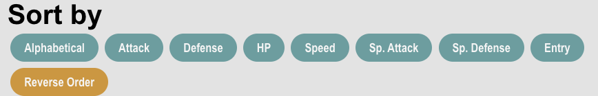
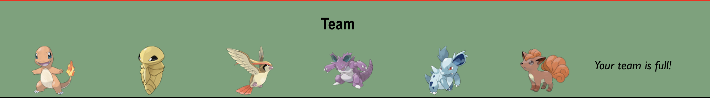
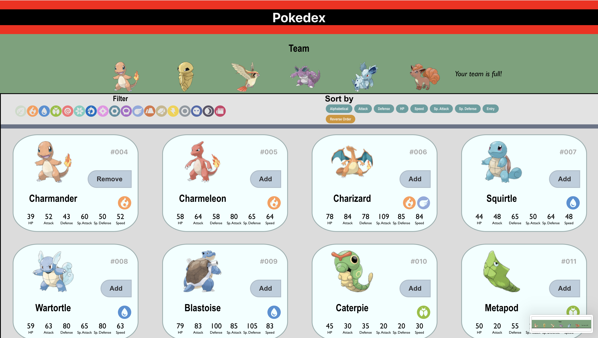

For this project I wanted to create a Pokedex from the Pokemon games and to be able to add and remove pokemon from a team while also being able to search for them in different ways. Since I knew that I was going to be needing to use a variety of things such as an agregator sorter and filter I started by doing a competitive analysis of a few existing platforms that use similar systems.
I researched three platforms that I knew used agggregatoris. I went to Netflix, Spotify, and Goodreads to get inspiration by observing how they used different and similar techniques. These can be observed in the table below.
| Company Name | Wrote Description | Includes Date Added | Add button is visible | Has sorting | Information is private | Aggregator created on login |
|---|---|---|---|---|---|---|
| Spotify | X | ✔ | ✔ | X | ✔ | ✔ |
| Goodreads | ✔ | ✔ | ✔ | ✔ | X | ✔ |
| Netflix | X | X | ✔ | X | ✔ | ✔ |
Looking at the table above and how I personally interacted with each of these interfaces, I concluded that Spotify's like button that then creates a liked songs playlists was effective in giving the user information about the liked song in the playlist, such as date added, artist and the album it belongs to. I do think that the lack of having a visible like button at all times can make it so that it is hard to use the feauture for the first time. In the case of Goodreads, I think that the best feautre they employed is the ability to leave a review with a description, because it allows users to remember what it is that they liked about the book. The only negative thing that I found from their aggregator was how it looked aesthetically, as it looked a bit outdated. Finally, Netflix had in my opinion the worst aggregator, which I think is because it is probably the least useful. Having a to watch list just requires a person to add/remove a movie from the list> I think their best feautre is how simple and sleek it looks, however the inability to see details of why/when this movie was added takes context out that could be helpful for a user to make a decision on the movie they want to watch next.
From this extensive research I learned that for my pokedex web application, I wanted to have affordances in the design, like using symbols for the filter that become opaque when they are turned of. Also, I want to include clear add/remove buttons that make it easy to know what is already part of the team. I do think that for the purpose of my idea, it is not necessary to have too much information about the pokemon in the aggregator since the information will be easily available to its side. Instead I want to display a simple image of the Pokemon that was added and keep all the information in the searcher.
For the implementation of my project I have three main components. There is my filter which uses different Pokemon Typings, there is my sorter that uses stats, alphabetical and pokedex entry sorting (with a reverse order feauture) and there is an aggregator which is the pokemon team the user is trying to build.
For the filter i decided to use all the pokemon types. For context, when building a Pokemon team, typing is very important. Most people like to have a balanced team with types that resist/are super effective against all other types. But it's also a useful feauture to look for Pokemon in a specific type category. The way my filter works is that by default all types are on, but if you press one of the icons it will visbly look more opaque and all the pokemon of that type will disapper from the Pokedex.
For the sorter I decided to put many different categories that can go in both descending and ascending order. By pressing the button the user can switch categories and order depending on what attribute they are looking for or what pokemon they are looking for, knowing their name/entry number.
For the aggregator I used a simple collection of up to six pokemon that could all be added to the team. A user is unable to have more than this number of pokemon on their team and there is a text bubble that tells them when their team is full. If they wish to add or remove somthing from the aggregator all the have to do is look for the desired Pokemon and press the add or remove button in their card.
In the end, this program was desgined for Pokemon players who desire to plant/build a team and look at relevant information like base stats and typing.
